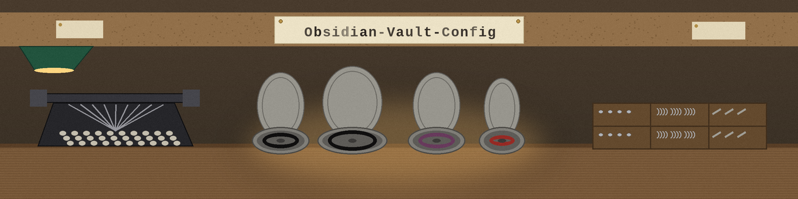

One configuration entry, kept on the bench ticket rail.

The vault carries one configuration entry: a vimrc for Obsidian, held as a symbolic link pointing into the owner dotfiles collection, so the mappings are maintained in that home and never copied into the vault.
.obsidian.vimrc, a symlink, not a copyChange the key mappings once at the source and the vault follows, with no second copy to drift out of step. The link points at a path on the owner's own Mac; on any other machine it will not resolve until it is pointed at a local copy of that file.
No plugin bundle, no theme pack, no snippet library, no sync scheme is claimed here, and a visitor hunting for those should look elsewhere. This repository holds almost nothing, and honesty about that smallness is its charm.